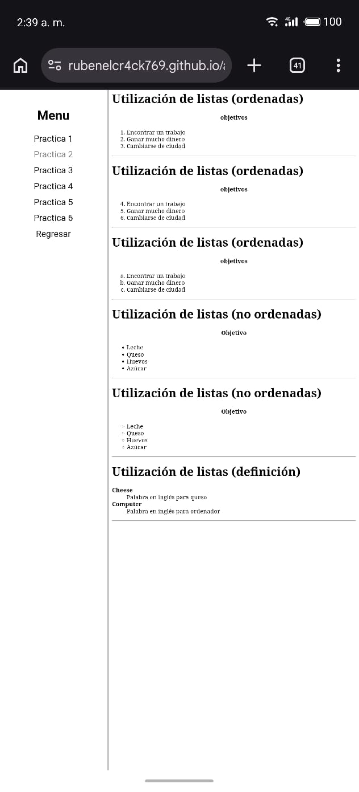

El objetivo aquí fue aprender a ordenar información en forma de lista. Usamos ol para listas numeradas (con orden) y ul para listas con viñetas o puntos (sin orden), metiendo cada elemento con la etiqueta li. También probamos las etiquetas dl, dt y dd para hacer listas de definiciones, que sirven para poner un concepto y su explicación abajo.